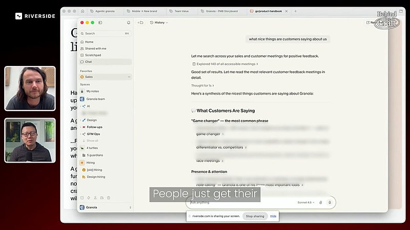
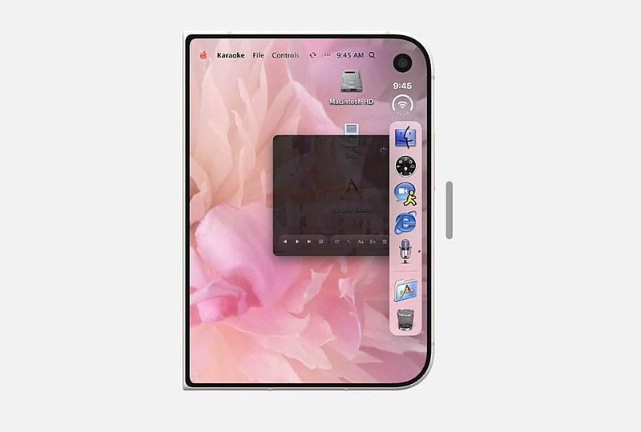

AI 日报 · 10月6日
AI 产品走向日常：入口、溯源与基础设施
OpenAI 公布欧盟文本水印安排和 ChatGPT 广告新格式；Cloudflare 汇总 Agent 基础设施更新。Builder 继续讨论简单入口、人的沟通、企业部署与持久 Agent。
文本溯源
Agent 工作流
产品入口
GitHub Trending
7
Builder 动态
5
今日上榜项目
3
官方资料
1
公开视频
今日要点
OpenAI 10 月 5 日说明：全球 API 客户可为部分模型主动开启文本水印，默认关闭；未来数周才会向欧盟符合条件的 ChatGPT 与 Codex 文本输出加入不可见水印。检测器初期仅向获批研究者和专业机构开放，水印也不能证明文本真实或界定责任。
OpenAI 宣布将在本月晚些时候先于美国图像生成场景测试清晰标记的新广告格式，并扩展效果衡量。Cloudflare 的一周回顾则汇总了 Agent 沙箱、内容付费和企业工作区等发布。两者分别处理消费端发现与基础设施侧的访问、计费问题。
深度对话
No Priors：收购成熟企业后如何推进 AI 改造
No Priors 9 月 24 日发布的访谈中，Sequence Holdings 联合创始人 Michael Lee 与 Sarah Guo 讨论持有成熟企业并在内部建立工程能力的路径。这是延伸阅读；以下均为受访者的策略判断，不代表改造效果已获独立验证。
从企业既有优势出发
Lee 认为在品牌、规模或监管形成壁垒的行业，可以通过收购成熟企业并重做技术和组织来争取领先，而不是只向其出售软件。
工程师需要进入经营核心
他主张让工程团队成为企业文化中受重视的角色，并把技术改造嵌进日常运营，而非把 AI 当成单独采购项目。
资本期限要匹配组织改造
Sequence 采用长期持有的结构；Lee 称团队希望有足够时间逐步改变流程与产品。访谈中的交易规模和收益预期均应以正式披露为准。
资讯精选
官方发布与资料
OpenAI｜文本水印的适用范围与局限
官方称欧盟 ChatGPT 与 Codex 的符合条件文本将在未来数周加入水印；全球 API 用户已可为部分模型选择开启。OpenAI 自测显示，短文本和经改写文本更难检测，因此检测结果只能作为有限线索。
OpenAI｜图像生成中的广告试验
新视觉广告格式将于本月晚些时候先向美国一组广告主开放测试，广告会标记并与生成图像分开。公司同时介绍转化归因与品牌适宜性评估合作；文中案例数据来自合作方。
Cloudflare｜一周 46 项发布的 Agent 线索
10 月 5 日官方回顾汇总了 46 项上周公告，包括用于 Agent 的容器沙箱、内容按次付费、模型自动路由，以及开放候补名单的企业 Agent 工作区；各项可用状态需以对应产品公告为准。
Builder 动态
一线实践与判断
Thibault Sottiaux｜承诺连续改进产品体验
负责 Codex 与 ChatGPT 的 Sottiaux 表示，接下来 28 天每天将推出一项对多数 Codex 或 Work 用户有明显价值的改进，或提供一次完整重置。这是未来安排，不等于各项改进已经上线。
Peter Yang｜让用户在既有工具中使用 Granola
Yang 分享对 Granola 联合创始人 Sam 的访谈：企业会在内部工具中通过 MCP 使用会议上下文，产品团队需要接受一部分价值在自身界面之外发生。此处是受访者的产品经验。

Guillermo Rauch｜文档按读者区分
Rauch 分享自己的写作原则：README 面向人，应亲自写清故事；供 Agent 使用的内部说明可以用更结构化的机器友好语言。他另称 Vercel 从 Go 迁移 Turborepo 到 Rust 时，人力迁移成本曾是重要争议。
Aaron Levie｜企业部署催生新岗位
Box CEO Levie 观察到应用 AI 工程师、驻场工程师和部署服务等岗位需求，也认为既有数据、研究及软件岗位正在转向 AI 工作。这是他对就业结构的判断，未在此给出可独立验证的总量。
Ryo Lu｜展示口袋里的桌面界面
Ryo Lu 发布一段界面演示，展示全屏桌面与侧边 Dock 在手机形态中的组合。帖子展示的是设计迭代，没有说明公开发布时间或产品可用范围。

Dan Shipper｜持续 Agent 会成为主要入口吗
Every CEO Shipper 说，近几周 dot 成为他使用 AI 的主要入口。他预测持续在线的 Agent 交互会保留，而当前角色化外观可能淡出；后半部分只是个人预测。
Matt Turck｜可解释性仍是基础问题
Turck 分享 Goodfire 研究者 Eric Ho 的访谈片段，强调模型并非按传统软件方式逐条构建，对内部机理的理解仍有限，因此需要更好的可解释性研究。
GitHub Trending
今日上榜项目


根据 10 月 6 日 GitHub Trending 实时榜单整理；星标和分叉来自本次 GitHub API 快照，数值与榜单随时变化。
今日思考
今天的官方公告和 Builder 原帖从不同层面指向同一件事：用户需要更少的入口负担，也需要知道内容从何而来、系统做了什么。文本水印能提供部分来源线索，但不能代替事实核查；持续 Agent 和企业工作区可以减少切换，也必须明确权限与责任。今日一问：如果你的产品把更多工作交给持续运行的 Agent，用户应在哪些节点看见来源、确认动作并保留退出权？
参考来源
OpenAI｜欧盟文本溯源规则说明
OpenAI｜ChatGPT 广告新格式
Cloudflare｜2026 Birthday Week 回顾
No Priors｜Michael Lee 原视频
Thibault Sottiaux｜28 天改进安排
Peter Yang｜Granola 访谈片段
Guillermo Rauch｜文档写作原则
Guillermo Rauch｜Rust 迁移观察
Aaron Levie｜企业 AI 岗位
Ryo Lu｜界面演示
Dan Shipper｜持续 Agent 入口
Matt Turck｜可解释性访谈片段
GitHub｜10 月 6 日 Trending
thedotmack/claude-mem
pingdotgg/t3code
Panniantong/Agent-Reach
calesthio/OpenMontage
cloudflare/cloudflare-os